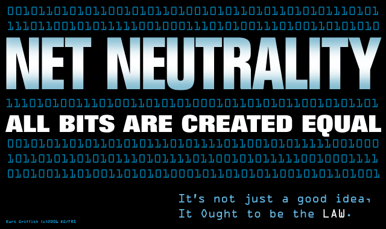

The World Of Network Components . .

Hubs
Hubs are simple network devices, and their simplicity is reflected in their low cost. Small hubs with four or five ports (often referred to as workgroup hubs) cost less than $50; with the requi- site cables, they provide everything needed to create a small network.
Switches
On the surface, a switch looks much like a hub. Despite their similar appearance, switches are far more efficient than hubs and are far more desirable for today's network environments.
Bridges
Bridges are networking devices that connect networks. Sometimes it is necessary to divide net- works into subnets to reduce the amount of traffic on each larger subnet or for security rea- sons. Once divided, the bridge connects the two subnets and manages the traffic flow between them.
Routers
Routers are an increasingly common sight in any network environment, from a small home office that uses one to connect to an Internet service provider (ISP) to a corporate IT envi- ronment where racks of routers manage data communication with disparate remote sites.
Gateways
The term gateway is applied to any device, system, or software application that can perform the function of translating data from one format to another. The key feature of a gateway is that it converts the format of the data, not the data itself.
CSU/DSU
A Channel Service Unit/Data Service Unit (CSU/DSU) acts as a translator between the LAN data format and the WAN data format. Some consider a it as a type of digital modem; but a normal modem, which changes the signal from digital to analog, a it changes the signal from one digital format to another.
Network interface cards (NICs)
NICs --- sometimes called network cards --- are the mechanisms by which computers connect to a network. NICs come in all shapes and sizes, and they come in prices to suit all budgets.
ISDN adapters
ISDN is a digital communication method that can be used over a conventional phone line, although certain criteria must be met for an ISDN line to be available (such as the availability of the service and the proximity of your location to the telco's site).
Wireless access points (WAPs)
Wireless access points, referred to as either WAPs or wireless APs, are a transmitter and receiver (transceiver) device used for wireless LAN (WLAN) radio signals. WAPs use the wireless infrastructure network mode to provide a connection point between WLANs and a wired Ethernet LAN.
Modems
Modem is a contraction of the terms modulator. It perform a simple function: It translate digital signals from a computer into analog signals that can travel across conventionalphone lines. The modem modulates the signal at a sending end & demodulates at a receiving end.
Transceivers (mediaconverters)
Transceiver does not describe a separate network device but rather an inte- grated technology embedded in devices such as network cards. On a LAN a transceiver is responsible to place signals onto the network media and detecting incoming signals traveling through the same cable.
Firewalls
Firewalls are an essential part of a network's design. It is a networking device, either hardware or software based, that controls access to your organization's network. It controlled access is designed to protect data from outside threat. Firewalls are typically placed at entry/exit points of a network.
Copyright © 2014 Pillars Of IT. All rights reserved.